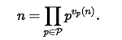

<!doctype html >
 <html>
 
 <body>
 <script language="javascript">

x=prompt()

ch='';
i=2;
f=0;
x=Number(x)
while(x!=1)
{
if( x % i==0)
{
x=x/i
ch=ch+i+'-'
}
else
{i++}
}
alert(ch)


</script>
</body>
</html>
<!doctype html > 
<html>
<head>
<meta charset="utf-8" />
<title>Décomposition en produit de facteurs premiers</title>
<link rel="stylesheet" href="style.css" />
<style>

body {
    font-family: 'Handlee', cursive;
    font-size: 13pt;
    background-color: #efefef;
    padding: 10px;
    margin: 0;

	background-size: cover;
}
h1 {text-align:center; color:white; font-family:verdana;}
spam{color:red;}
</style>
</head>
<body>
<header>  
  <h1 color="white">Mattard<sub class="c2">we just help you to do some quick Maths </sub> </h1>

</header>
<nav class="c1"> 
<ul id="navigation">
 <li> <a href="test1.html">Accueil</a> </li>
 <li> <a href="Arrangement.html">Arrangemet</a> </li>
 <li> <a href="dfp.html">décompostion en facteur premier</a> </li>
 <li> <a href="nombrepremier.html">nombre premier</a> </li>
  <li> <a href="ppcm.html">ppcm</a> </li>
   <li> <a href="pgcd.html">pgcd</a> </li>
   <li> <a href="Puissance.html">puissance</a> </li>
   <li> <a href="Combinaison.html">Combinaison</a></li>
   <li> <a href="fact.html">factorielle</a></li>
</ul>
</nav>  
<hr size="6" color="#3366ff" width="100%">
<br>
<br>

<h1><spam>Décomposition en produit de facteurs premiers</spam></h1>

<section> 
  <div id="c3">
  <fieldset >
     <legend>Définition</legend>
<p>En mathématiques et plus précisément en arithmétique, la décomposition en produit de facteurs premiers, aussi connue comme la factorisation entière en nombres premiers, consiste à chercher à écrire un entier naturel non nul sous forme d'un produit de nombres premiers. Par exemple, si le nombre donné est 45, la factorisation en nombres premiers est 32 × 5, soit 3 × 3 × 5.

Par définition, un nombre premier ne peut pas être décomposé en produit de plusieurs nombres premiers. On peut aussi dire qu'il est sa propre décomposition. Quant au nombre 1, c'est le produit vide
</p>
</fieldset>
  <fieldset >
<legend> Exemple</legend>
<a href= "dfp1.html"> </a>
<p>
<br>
5 = 5
25 = 5 × 5 = 52
125 = 5 × 5 × 5 = 53
360 = 2 × 2 × 2 × 3 × 3 × 5 = 23 × 32 × 5
1 001 = 7 × 11 × 13
1 010 021 = 17 × 19 × 53 × 59
 <br>
 <h1><spam>vous pouver esseyer la Décomposition en produit de facteurs premiers en cliquant sur limage</spam></h1>
 </p> 

 


</div>

</p>
</body>
</html>